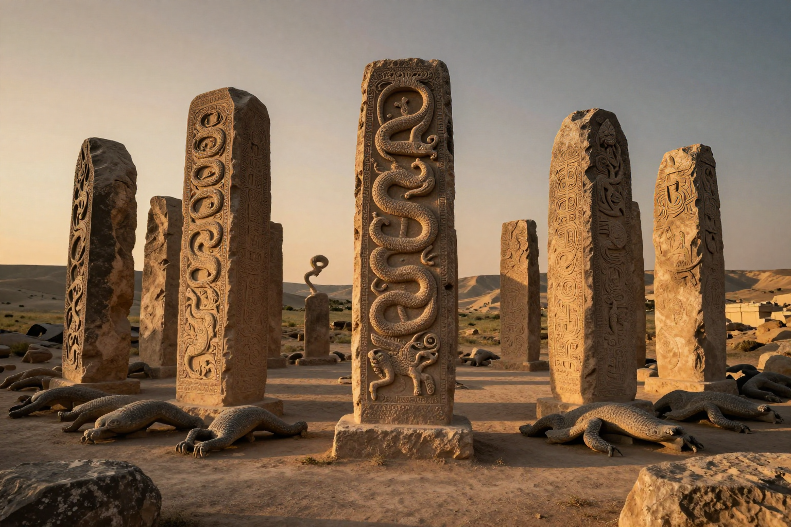
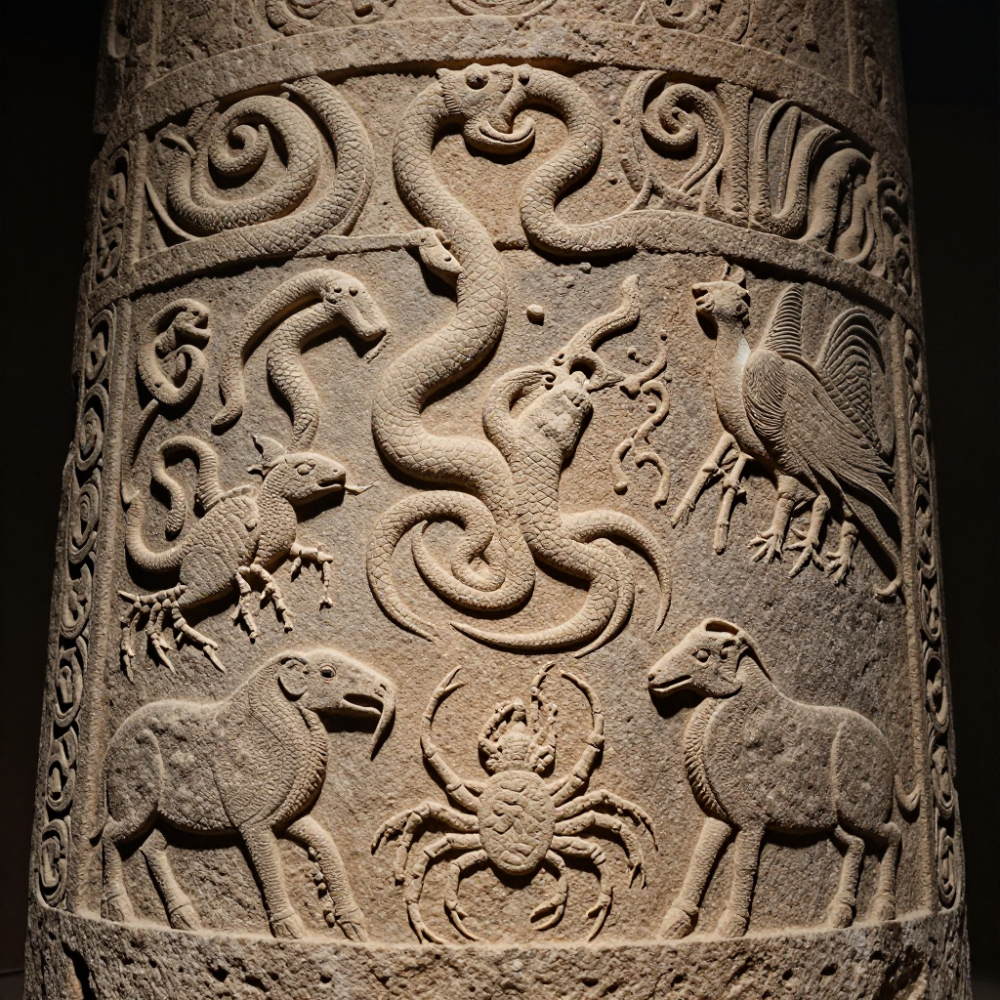
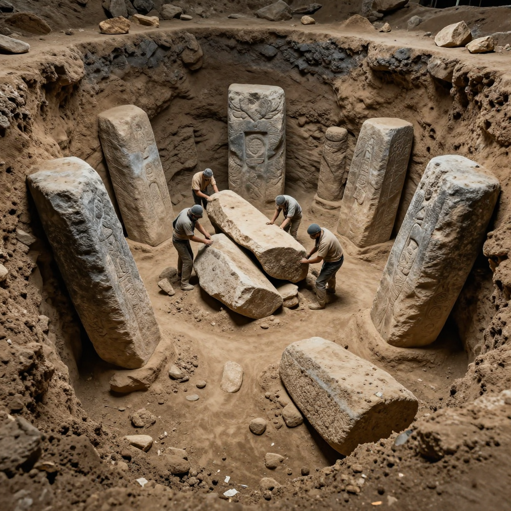

Gobekli Tepe: The World's First Temple!

These massive stone circles were built 12,000 years ago - before the pyramids, before Stonehenge, before farming!
Imagine a temple so old that it was already ancient when the Egyptians built the pyramids. A temple built by people who hadn't even invented farming yet. This place exists - and it's called Gobekli Tepe.
When archaeologists discovered this site in Turkey, it changed everything we thought we knew about human history. How did hunter-gatherers build something this massive and complex? And why did they bury it on purpose?
A Discovery That Changed History
In 1994, a shepherd noticed some strange stones sticking out of a hill in southeastern Turkey. He told archaeologists, and what they found was incredible: a massive temple complex buried under tons of dirt.
But the real shock came when they dated the stones. Gobekli Tepe was built around 9600 BCE - that's over 12,000 years ago! This makes it:
- 🏛️ 7,000 years older than the pyramids
- 🪨 6,000 years older than Stonehenge
- 🌾 Built before humans invented agriculture!

The pillars are covered with detailed carvings of animals - snakes, scorpions, vultures, and wild boars!
🧱 How Did They Build It?
The largest pillars weigh up to 50 tons - as much as 10 elephants! And these people didn't have wheels, metal tools, or even farming. They moved these massive stones by hand!
What Did They Find?
Gobekli Tepe contains about 20 circular enclosures, each surrounded by massive T-shaped stone pillars. The pillars are decorated with incredible carvings of animals:
- 🐍 Snakes slithering up the pillars
- 🦂 Scorpions with raised tails
- 🦅 Vultures with spread wings
- 🐗 Wild boars and foxes
- 🐆 Even lions and bulls!
These aren't rough scratchings - they're detailed, artistic carvings made by skilled craftsmen. But who were these artists? And why did they make this place?
The Great Mystery: Why Was It Buried?

The entire complex was deliberately buried under tons of dirt and rubble - but nobody knows why!
Here's the strangest part: after using Gobekli Tepe for about 1,500 years, the ancient people deliberately buried the entire site. They filled the enclosures with dirt and rubble, covering their incredible creation forever.
Why would they do this? Some theories include:
🙏 Religious Ritual: Maybe burying the temples was part of their religion - a way of returning the sacred site to the earth.
⚠️ Danger or Fear: Perhaps something threatened them, and they hid their temple to protect it.
🔄 Moving On: Maybe they simply finished using the site and wanted to close it properly, like sealing a tomb.
🌍 It Changed Everything!
Before Gobekli Tepe, scientists thought people built temples AFTER they started farming. But this site proves the opposite: people came together to build temples FIRST, and farming developed later to feed the workers!
What Was It For?
Nobody lived at Gobekli Tepe - there are no houses, no cooking fires, no trash piles. It was purely a religious site. But what kind of religion?
The animal carvings might give us clues. Some experts think the different animals represented different clans or tribes. Perhaps Gobekli Tepe was a meeting place where different groups came together for ceremonies.
Others think it might have been a temple to the dead. The vulture carvings suggest sky burial - a practice where bodies are left for birds to consume. Maybe this was where ancient people honored their ancestors.
The Mystery Continues
Only about 5% of Gobekli Tepe has been excavated. There's still so much buried under that hill. What other secrets are waiting to be discovered?
Gobekli Tepe proves that ancient humans were far more advanced than we ever imagined. And it reminds us that there's still so much about our past that we don't understand!
Clear Summary for Readers of All Ages
Gobekli Tepe: The World's First Temple! can sound dramatic, but the best way to understand it is to separate strong evidence from speculation. This article is written to be clear enough for younger readers while still useful for adults who want reliable context.
In simple terms, this topic matters because it connects three ideas: what happened, how we know, and what remains uncertain. The core story in Gobekli Tepe: The World's First Temple! is easier to follow when we use a timeline, define key terms, and point directly to sources.
These massive stone circles were built 12,000 years ago - before the pyramids, before Stonehenge, before farming!
Background Timeline (What Happened, Step by Step)
- In 1994, a shepherd noticed some strange stones sticking out of a hill in southeastern Turkey.
- Experts continue revisiting Gobekli Tepe: The World's First Temple! as better tools and stronger source checks become available.
- Experts continue revisiting Gobekli Tepe: The World's First Temple! as better tools and stronger source checks become available.
- Experts continue revisiting Gobekli Tepe: The World's First Temple! as better tools and stronger source checks become available.
- Experts continue revisiting Gobekli Tepe: The World's First Temple! as better tools and stronger source checks become available.
This timeline view helps younger readers build a mental map, and it helps adult readers evaluate whether later claims fit the documented sequence of events.
What We Know with Strong Support
Across discussions of Gobekli Tepe: The World's First Temple!, several points are consistently supported by records or repeatable analysis:
- These massive stone circles were built 12,000 years ago - before the pyramids, before Stonehenge, before farming!
- Imagine a temple so old that it was already ancient when the Egyptians built the pyramids.
- When archaeologists discovered this site in Turkey, it changed everything we thought we knew about human history.
- How did hunter-gatherers build something this massive and complex?
These claims are stronger because they can be checked independently, rather than depending on one dramatic story or one unverified source.
How Researchers Study This Topic
Good history is a method, not just a story. When experts examine Gobekli Tepe: The World's First Temple!, they usually combine source criticism, technical analysis, and contextual comparison.
- Archaeologists compare excavation reports, layer dates, and artifact context rather than relying on isolated objects.
- Museum catalogs and conservation notes help separate original features from later restoration changes.
- Scholars test competing interpretations against material evidence, inscriptions, and parallel finds from nearby sites.
For readers aged 7+, a simple rule is helpful: if someone makes a big claim, ask, “What is the evidence, and can another expert check it?”
What Experts Still Debate
Even with good evidence, not every question has a final answer. In Gobekli Tepe: The World's First Temple!, debates often continue because the surviving data is incomplete, damaged, or interpreted in different ways.
One common source of confusion is mixing the topics of A Discovery That Changed History, What Did They Find?, and The Great Mystery: Why Was It Buried? as if they prove the same thing. In reality, each part of the story may require different standards of proof.
A balanced approach is to keep uncertainty visible: we can confidently state what records show today, while leaving room for future evidence to update the picture.
Myths vs. Evidence
Myth: If a topic is mysterious, experts have no idea what happened.
Evidence-based view: Usually, experts know many parts of the story; the debate is about specific details.
Myth: The most dramatic explanation is probably true.
Evidence-based view: The best explanation is the one that matches the most verifiable facts with the fewest assumptions.
Myth: New claims automatically replace old research.
Evidence-based view: New claims become accepted only after careful checks, replication, and critical review.
Why This Story Still Matters Today
Gobekli Tepe: The World's First Temple! is not only a curiosity from the past. It is also a practical lesson in how people evaluate information. In a world full of fast headlines, this topic reminds us to slow down, check sources, and separate confidence from certainty.
For younger readers, this builds critical-thinking skills. For adult readers, it improves media literacy and historical judgment. In both cases, the goal is the same: understand the past clearly enough to make better decisions in the present.
Mini Glossary (Plain Language)
- Primary source: A record made close to the event, like a report, letter, inscription, or official document.
- Secondary source: A later explanation that interprets primary evidence.
- Hypothesis: A proposed explanation that must be tested against evidence.
- Consensus: The view most experts currently support, knowing it can change with new data.
- Context layer: The archaeological layer where an object is found, which helps date and interpret it.
- Provenance: The known history of where an artifact came from and who handled it over time.
Quick Recap
If you remember only three things about Gobekli Tepe: The World's First Temple!, keep these: (1) there is real evidence worth studying, (2) some questions remain open, and (3) careful source-checking is the best path to reliable understanding.
That combination of curiosity and caution is what turns a mystery into a meaningful history lesson for readers of every age.
References & Further Reading
Editorial note: We cross-check claims across multiple independent sources. See our Editorial Policy.